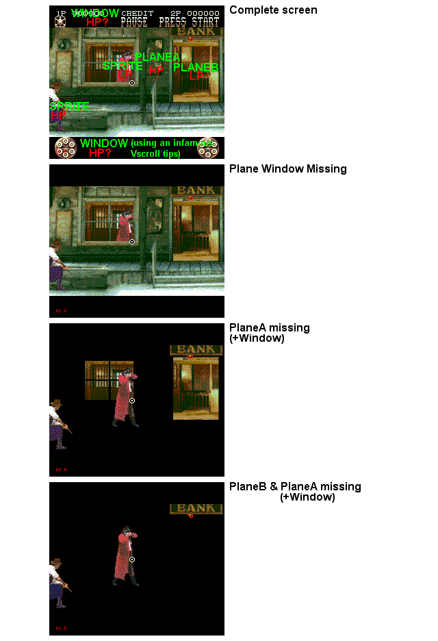

Pic 2 - HP&LP sprites, WTF?
Lethal Enforcer 2 shows that it's possible (using priorities) to display a sprite before or behind the PlaneA.
PlaneA is in HP so : Sprites with HP are displayed before it; Sprites with LP are displayed behind it.
Just for the info : Planes size are 64*64 tiles (max size) and Shadow/Highlight is disactivated. Also note that the use of the Plane Window is a bit strange and quite illegal (top & bottom of the screen at once).
